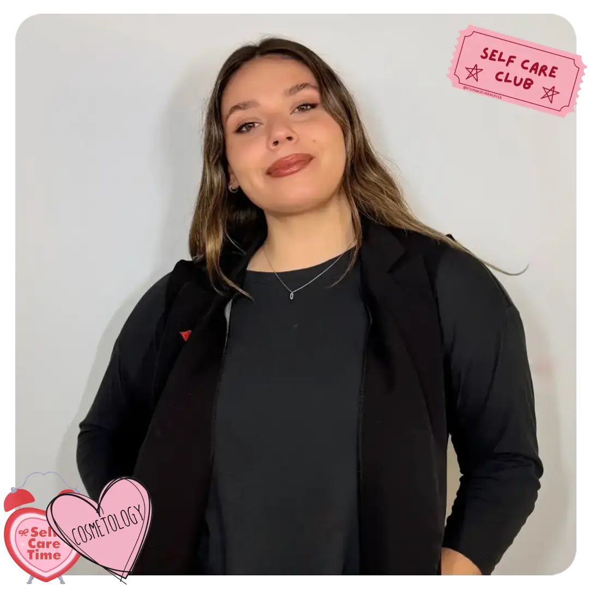

Hola! Soy Aixa
Cosmetóloga y cosmiatra, y me dedico al cuidado integral de la piel a través de tratamientos faciales personalizados. Me gusta entender qué necesita cada piel, conocer su historia y acompañar sus cambios. Por eso, mi forma de trabajar parte de escuchar, observar y adaptar cada tratamiento a las necesidades de cada persona, siempre respetando los tiempos de la piel y priorizando su salud. Creo que cuidar la piel va mucho más allá de un tratamiento puntual. Se trata de aprender a conocerla, entender qué le hace bien y construir, de a poco y con constancia, una rutina que la ayude a mantenerse saludable. En MONA quiero que te sientas en confianza, que puedas hacer tus consultas y que encuentres un espacio donde cuidarte, desconectar un ratito y recibir una atención pensada especialmente para vos y tu piel.